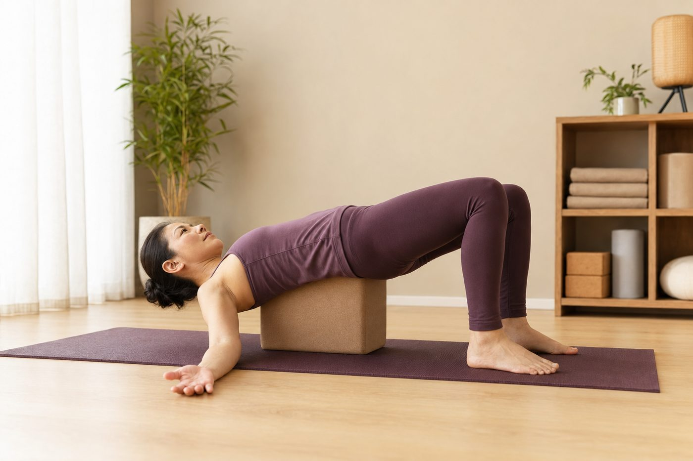

後彎不是折腰：下背會痛，問題常在臀部沒出力

試著往後仰、做個後彎，結果不是胸口打開的舒服，而是下背一陣緊、甚至痠痛？你可能會想：是不是我太硬、腰不夠軟？先別急著怪柔軟度。很多時候，痛的原因不是你彎得不夠，而是你把「後彎」做成了「折腰」。
後彎，其實是整條脊椎一起延展
理想的後彎，是頸椎、胸椎、腰椎一節一節均勻地往後延展，像一張被慢慢拉開的弓，力量攤在整條脊椎上。但多數人久坐、圓肩，胸椎長期卡在往前彎的位置，又硬又不太動。當你想後仰時，動不了的胸椎乾脆「跳過」，把整個彎的任務丟給比較靈活的腰椎——尤其是腰椎下段那幾節。
於是你以為自己在後彎，身體其實只彎了腰那一小段。延展沒有被分攤，全塌在同一個位置，椎體後方的小面關節被反覆擠壓，下背當然容易痠、緊，嚴重時還會刺痛。這不是柔軟度不夠，而是「彎的地方太集中」。
下背痛，通常不是你彎得不夠深，而是彎的位置太集中——全壓在腰椎那幾節上。
臀大肌和核心，才是後彎真正的保護者
一個安全的後彎，不能只靠脊椎硬撐，需要肌肉在旁邊幫忙「分攤」和「煞車」。這裡最關鍵的兩位主角，就是臀大肌和核心。臀大肌收縮時，會幫你穩住骨盆、輕輕把骨盆往後收，避免腰椎過度往前塌陷；核心裡的腹橫肌、多裂肌，則像一圈天然的束腰，從裡層包覆、撐住脊椎，把壓力平均散開。
問題是，久坐族的臀大肌常常「睡著了」（久坐讓臀部「失憶」），核心也習慣放空。少了這兩道保護，後彎的力量無處可去，就只能全落在腰椎那一小段身上。一個好的後彎，身體其實同時在做這些事：
- 臀大肌收住：穩定骨盆，不讓腰椎往前塌下去
- 腹橫肌、多裂肌啟動：像束腰一樣從裡層包覆、保護脊椎
- 胸椎主動延展：把彎的幅度往上帶，分散到上背
- 髖前的髂腰肌延展：讓骨盆能自由活動，而不是被卡住
破解最大迷思：後彎不是「腰要很軟」
很多人以為，後彎做不深是因為腰不夠柔軟，於是拚命想把腰折得更彎。但這正好搞錯了方向。腰椎天生的設計就是「穩定」——它負責在下背撐住你的體重，本來就不該有太大的後仰角度。真正該被鬆開、被延展的，是上面那段又硬又緊的胸椎，還有髖關節前側的髂腰肌、股直肌。
而胸椎為什麼那麼緊？往往和前側的胸大肌、胸小肌縮短有關——它們把肩膀往前拉，讓上背駝著、打不開，胸椎自然動不了。所以你會發現，想安全地後彎，得先回頭把胸口顧好，這也是為什麼「開胸」到底在開什麼會是後彎族一定要先懂的觀念。換句話說：你以為要練軟的是腰，其實真正要打開的是胸口，真正要出力的是臀。
壁繩怎麼幫你「分散」而不是「集中」
徒手後彎最難的，是你一緊張就會不自覺塌腰——身體沒有安全感，臀和核心就不敢出力，只好整個往腰上掉。壁繩的好處，是它能穩穩接住你一部分體重，給你支撐和借力；有了這份安全感，臀和核心才敢啟動，你也才有餘裕去感覺「彎的感覺往胸口跑」，而不是往腰塌。
對還在摸索的人，會建議從有支撐的溫和後彎開始，先讓身體記住正確的分工，再慢慢加大幅度。如果你不確定自己到底是胸椎太緊、還是骨盆位置的問題，也可以先做一次現場的 AI 體態檢測，看清楚了再練，會少走很多冤枉路。
先看清楚，你的「卡」到底卡在哪裡
AI 體態檢測在教室現場做，用影像看你的胸椎活動度與骨盆位置，幫你分辨後彎痠痛是柔軟度不足，還是出力順序沒對好——先看懂，才知道要練哪裡。
預約首次 NT$199 AI 體態檢測今天可以先記住的一件事
如果這篇只帶走一句話，那就是：後彎之前，先「收臀、收核心」，把往後延展的感覺帶到胸口，而不是塌進腰裡。剛開始角度小一點沒關係，感覺對了，遠比彎得深重要太多。體態和動作習慣都是慢慢調的，一次一點點，讓身體有時間學會新的分工，比硬折出一個漂亮弧線來得安全，也走得更久。
本頁為體態與姿勢的一般衛教與練習分享，非醫療診斷或治療。若有疼痛、舊傷或特殊病史，請先諮詢合格醫療專業人員。